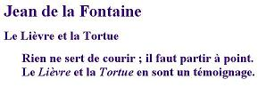
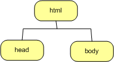
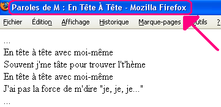

Introduction :
Nous commençons par préciser quelques notions de base du langage HTML. Ensuite, partant d'un petit exemple, nous élaborerons une première page HTML. Enfin, nous verrons ce qu'est le quirk mode et validateur. Nous terminons ce chapitre par une brève explication sur les caractères spéciaux.
Définition :
Le HTML, HyperText Markup Language, est un langage de présentation; il fournit des informations sur la structure des documents. Il s'agit d'un standard adopté par le W3C. Le HTML est constitué de balises (signaux et, par définition Wikipédia, unités syntaxiques délimitant des séquences de caractères à l'intérieur d'un flux de caractères) destinées à informer le navigateur sur le contenu de la page HTML qu'il doit afficher. Il s'agit d'un langage qui permet de baliser des textes afin que les navigateurs en reconnaissent la structure et la manière de l'afficher. Outre cet aspect de langage de balisage (Markup Language) qui représente une classe de langages spécialisés dans l'enrichissement d'information textuelle, le HTML permet de faire des liens hypertextes (HyperText). Un lien hypertexte est un moyen de référencer d'autres sites à partir d'un site via une URL à travers HTTP. C'est ainsi que se tisse la toile, les sites ayant des liens entre eux permettent la navigation tranquille sur le web.
Un fichier dont l'extension est .html n'est qu'un simple fichier texte n'incluant aucune information de formatage contraitement au fichier .doc, par exemple. La convention est d'ajouter l'extension .htm ou .html afin de signifier qu'il s'agit bien d'un fichier HTML. Cela ne change rien mais permet simplement aux plateformes qui ne comprennent que les extensions à trois caractères de fonctionner correctement.
Le choix d'un langage de balisage se justifie pleinement car il offre la possibilité à tous navigateurs de récupérer les ressources du Web. Le choix d'une application WYSIWYG plutôt qu'un langage de balisage aurait entraîné des dépendances vis à vis du format des ressources. Or, l'objectif premier du Web est certainement son universalité.
Chaque langage de balisage défini en SGML (Standard Generalized Markup Language) est appelé application SGML et est normalisé par ISO, donc HTML est une application SGML.
WYSIWYG (What you see is what you get, c'est-à-dire ce que vous voyez est ce que vous obtenez) est un acronyme utilisé pour désigner des interfaces graphiques permettant de composer visuellement le résultat voulu, par exemple pour un logiciel de mise en page comme PowerPoint ou un traitement de texte comme Word.
Éditeurs de page HTML :

Un éditeur est indispensable. Un éditeur HTML (ou éditeur Web) est un logiciel conçu pour faciliter la préparation et la modification de documents écrits en HTML. Le choix est vaste et s'étend du simple bloc-notes à des éditeurs puissants comme Eclipse par exemple.
Toutefois, il est indispensable de débuter avec un éditeur simple Notepad++ afin de comprendre progressivement HTML. Lorsqu'on maîtrise HTML (et CSS), il devient judicieux de choisir un éditeur plus sophistiqué comme VSCode (Visual Studio Code). Grâce au lien, vous pouvez facilement installer cet éditeur sur votre PC personnel.
Pour plus d'informations sur les différents raccourcis et extensions à utiliser sur VSCode, tapez ici ici !
Extension ".html" :
Pour écrire une page HTML, il suffit de la créer dans l'éditeur et de l'enregistrer en veillant bien à ce que l'extension ".html" ou ".htm" soit présente. Nous vous conseillons vivement d'afficher les extensions de vos fichiers dans votre explorateur. Effectivement, par défaut, l'explorateur de fichiers Windows n'affiche pas les extensions de fichiers lorsqu'il s'agit d'un type répandu. Par exemple, votre page "blabla.html" s'affichera comme "blabla" dans l'explorateur sans l'extension ".html".
Afin d'afficher les extensions de vos ficiers dans l'explorateur Windows, cochez dans le menu "Affichage" l'option "Extensions des fichiers".
Affichage des pages HTML :
Pour afficher une page HTML, soit vous ouvrez votre navigateur et sélectionnez dans le menu "fichier" "Ouvrir" soit, dans votre explorateur, vous double-cliquez sur votre page.
Élaborer un document HTML :
Premier essai :
Faisons un petit essai :
- ouvrez votre éditeur Notepad++ ou VSCode
-
encodez le texte suivant :
 - enregistrez votre page avec le nom suivant delaFontaine.html
- fermez votre éditeur
- ouvrez votrepage avec votre navigateur Web (en faisant un double-click sur l'icône ou le nom du fichier contenant ce que vous venez d'écrirer par exemple)
Vous constatez que le contenu de votre fichier est effectivement affiché mais sans aucune mise en forme. Il n'y a ni titre, ni paragraphes. Ceci est normal puisqu'aucune mise en forme n'a été effectuée; vous n'avez indiqué aucune exigence quant à la structure et la présentation de votre page.
Structurer une page, c'est y introduire des titres, des paragraphes, des mots en évidence, ... bref, toutes les informations sur la structure de la page. Le HTML permet le balisage du contenu de votre page afin d'en définir la structure et la présentation lors de l'affichage par le navigteur. Voyons maintenantce qu'est une balise !
HTML, langage de balisage :
Définition :
Une balise, en anglais markup, est un mot-clé assigné à de l'information. Une balise est contenue entre chevrons (< et >). Il existe des balises ouvrantes et fermantes.
- une balise ouvrante s'exprime comme suit : <nom de la balise>. Par exemple, <h3> est une balise ouvrante pour un titre de niveau 3.
- une balise fermante renferme le même nom de balise que la balise ouvrante mais commence par un "slash" ("/") : </nom de la balise>. </h3> est la balise fermante pour mon titre ci-dessus.
Nous verrons par la suite qu'une balise ne doit pas toujours se fermer en HTML mais bien en XHTML.
En HTML, un élément = balise ouvrante + contenu + balise fermante. Par exemple, l'élément suivant <h3>Ceci est un titre de niveau 3</h3> est un titre de niveau 3.
Un élément peut contenir un ou plusieurs attributs. Un attribut est un ajout d'information sur l'élément. On spécifie l'attribut dans la balise ouvrante en indiquant sa valeur. La balise ouvrante prend alors la forme suivante : <uneBalise unAttribut="uneValeur">. Lorsqu'un élément a plusieurs attributs, l'ordre d'énumération de ceux-ci importe peu. Attention, les attributs sont détermés pour les éléments, il ne s'agit pas de les inventer. Effectivement, les navigateurs ne connaissent qu'une liste d'attributs prédéfinis pour chaque élément. Si vous inventez des attributs, les navigateurs web ne sauront pas quoi en faire. Quand un navigateur identifie un élement ou un attribut, on dit qu'il "supporte" cet élément ou cet attribut. Nous identifierons quelques attributs pour les éléments que nous allons aborder par la suite.
Par exemple, l'élément img est la balise qui permet d'insérer une image dans un document HTML. Il faut évidemment préciser quelle est l'image que l'on veut insérer. Comme nous le verrons plus tard, il faudra donner la référence du fichier qui contient cette image à l'aide d'un attribut. Si l'image à insérer est logo.gif, l'élément prendra par exemple la forme suivante : <img src="../images/logo.gif" alt="description de l'image">.
Par convention, les balises s'écrivent en minuscule en HTML.
Les types de balises :
En HTML, on distingue deux types de balises :
- Les balises de structure : ces balises permettent de structurer le contenu des pages HTML. Elles déterminent les différents éléments de la page : les paragraphes, les titres, les morceaux de pages, les listes, ... Ce qui correspond aux balises suivantes : <p>, <h1>, <div>, <ul>, ...
- Les balises de forme : ces balises permettent la mise en forme du texte. Par exemple, les balises <i>, <font>, ...
Lorsqu'on écrit des pages HTML, le code source est souvent alourdi par les balises de forme. La dernière version du standard HTML encourage la séparation entre les balises de structure et les balises de forme afin d'alléger le contenu des pages HTML. Effectivement, tandis que les anciennes versions du HTML mélangent les balises de forme et de structure, dans toutes les versions ultérieures à la version 4.0, on préconise l'emploi de feuille de style (CSS) pour la gestion de la forme. Dans le cadre de ce cours, nous veillerons à respecter un standard (HTML 5) et nous placerons tous les éléments de style dans des feuilles de style (voir les chapitres sur le CSS).

Donc pas de styles dans les pages HTML !!!
Le CSS s'occupera de cette partie.
Structure d'une page HTML :
Commençons par analyser une simple page HTML :
<!DOCTYPE html>
<html lang="fr">
<head>
<meta charset="UTF-8">
<title>Le titre de ma page</title>
</head>
<body>
J'écris ici le contenu de ma page...
</body>
</html>
Quand vous créez une nouvelle page HTML5, commencez par copier-coller ce code de base ou utilisez le raccourci "!" de l'extension "Emmet" de VSCode (voir ici).
Vous pouvez ensuite ajouter d'autres balises de structure.
La première ligne indique que c'est un document HTML et plus particulièrement un document HTML5.

Ceux d'entre vous qui auraient fait de l'HTML4 pourront remarquer l'allégement de cette première ligne par rapport à HTML4.
Le contenu textuel des sites internet en est la matière principale. Il est donc très important de le soigner particulièrement. C'est également l'élément primordial pour le référencementnaturel (SEO - Search Engine Optimization).
La première balise qui permet de délimiter le fichier HTML est <html>. On retrouve la balise fermante correspondante (</html>) en fin de fichier.
La langue utilisée pour rédiger une page internet doit obligatoirement être renseignée pour être valide. Cela est indiquée par l'attribut lang de la balise <html>. Cette information est primordiale aussi bien pour l'accessibilité que pour le référencement naturel. Ainsi, les lecteurs d'écran sont capables d'utiliser une synthèse vocale adaptée à la bonne langue, et non à celle par défaut.
Les valeurs de langue sont définies par le document "Les balises d'identification des langues" (BCP47). La syntaxe simplifiée est composée de la sous-balise de langue, éventuellement complétée par la sous-balise de script et/ou la sous-balise régionale.
La sous-balise de langue est un code sur deux ou trois caractères représentant la langue.
Exemples :
- fr : Français
- en : Anglais
- es : Espagnol
- it : Italien
- de : Allemand
La sous-balise de script est composé de quatre caractères. Elle indique le système d'écriture. Par exemple, Brai correspond au braille. Ainsi, fr-Brai correspond à du texte en français écrit en braille.
La sous-balise régionale indique un dialecte d'une langue. Elle est toujours composée de deux lettres majuscules. Par exemple, en-US correspond à de l'anglais parlé par les Américains.
Variantes pour le français :
- fr-BE : Français de Belgique
- fr-CA : Français du Canada
- fr-CH : Français de Suisse
- fr-FR : Français de France
L'attribut lang est universel, c'est-à-dire qu'il est possible de l'utiliser sur n'importe quelle balise. Par exemple, si une situation est effectuée dans une autre langue dans la page, il est possible de l'indiquer comme ceci :
<blockquote lang="en-US" cite="https://www.w3.org/">Leading the web to its full potential</blockquote>
On constate ensuite que le fichier HTML se compose d'une en-tête (head) et d'un corps (body).
Graphiquement, on représenté l'imbrication des balises via une arborescence comme suit :
Les balises <html>, <head> et <body> :
<html> :
L'entièreté de votre document doit se trouver entre les balises <html> et </html> qui permet d'indiquer au navigateur que le fichier est fichier HTML.
<head> :
Dans l'élément html, on place tout d'abord l'élément en-tête du document. Cet élément se compose des balises <head> et </head>. Les informations indiquées dans l'en-tête d'un document HTML précisent des informations sur la page. L'en-tête contient ce que l'on appelle des méta-informations, c'est-à-dire des informations sur la page HTML elle-même. Ces informations ne sont pas affichées en tant que telles mais renseignent le navigateur.
tout d'abord, dans l'en-tête, il est conseillé de spécifier le type de contenu du fichier ainsi que les caractères utilisés pour son encodage. Sans ces informations, certains navigateurs afficheraient votre page bizarrement; imaginez un navigateur asiatique configuré par défaut pour des idéogrammes, impossible pour lui de comprendre les lettres de type latin (c'est-à-dire ISO-8859-2) si on ne l'informe pas qu'il s'agit effectivement de charactères de type latin.
Pour déclarer le type d'encodage de la page HTML, on spécifie donc la balise suivante :
<meta charset="UTF-8">
- meta
- signifie qu'on donne des informations sur la page au navigateur.
- charset
- permet de préciser le type d'encodage des caractères utilisé pour le fichier html.
Il existe différents types d'encodage. Les plus connus dans nos contrées sont le codage latin (ISO-8859-1) et le codage UTF-8. Le premier encodage est capable de coder la plupart des langues européennes mais ne connaît pas les caractères arabes, russes, chinois, ... Ceci est dommage quand on veut faire un site web accessible sur Internet et par conséquent potentiellement par des nations ayant des jeux de caractères différets. Vous l'aurez peut-être compris le deuxième encodage (UTF-8) supporte la plupart des jeux de caractères internationaux. C'est pourquoi nous utiliserons celui-ci.
Vu que l'on précise que l'on utilise l'encodage UTF-8 pour créer nos pages HTML, vous devez vérifiez que votre fichier HTML, vous devez vérifiez que votre fichier est effectivement bien enregistré avec cet encodage. Sinon vous aurez le symptôme suivant : des caractères (souvent accentués) apparaîtront bizarremment. Sous Windows, vous pouvez vérifiez ceci dans le menu "Encodage" de Notepad++, sélectionnez "UTF-8". Sous Mac et Linux, l'encodage par défaut est UTF-8 donc vous n'aurez normalement pas de problème.
On peut également préciser le titre de la page grâce à l'élément title. Le titre s'affiche généralement en haut de la fenêtre du navigateur.
Voici un exemple avec un titre qui s'affiche dans le menu tandis que les informations contextuelles sont gérées par le navigateur. La balise <br> permet de faire un passage à la ligne mais nous aborderons ce point plus loin.
| Le code de la page HTML : | L'affichage par le navigateur : |
|---|---|
|
 |
Ensuite, on peut préciser d'autres méta-informations comme l'auteir de la page, des mots-clés de la page (ceux permettent aux moteurs de recherche comme google de référencer adéquatement votre page), ...
<meta name="description" content="Ce texte de description doit apparaître à l'utilisateur dans les résultats du moteur de recherche">
<meta name="author" content="Emmeline Leconte">
<meta name="keywords" content="HTML, Information Meta, programme de recherche, protocole HTTP">
<meta http-equiv="X-UA-Compatible" content="IE=edge">
<meta name="viewport" content="width=device-width, initial-scale=1.0">- meta :
- signifie qu'on précise les méta-informations de la page.
- name :
- permet de préciser le type d'information qu'on donne dans content.
- content :
- renferme l'information proprement dite.
- http-equiv :
- est une information transmise au serveur web indiquant comment la page doit être servie (pragma directive en anglais). Cet attribut pouvant prendre des valeurs pré-définies représente un objet pouvant modifier le comportement des serveurs ou des agents utilisateur.
Les deux dernières instructions meta sont utilisées : d'abord, pour la compatibilité "IE-edge" et, ensuite, pour les terminaux mobiles.
Vous savez donc maintenant comment renseigner votre nom et prénom sur chaque page HTML que vous créerez.
<body> :
Dans l'élément html, après l'en-tête, on précise ensuite le corps de la page qui englobe l'ensemble du contenu de la page. Cet élément se compose dans les balises <body> et </body>.
C'est le contenu du corps de la page qui est affiché par le navigateur.
Le fichier HTML :
La déclaration du type de document :
En général, on commence un document HTML par la ligne suivante (juste avant la balise <html>) :
<!DOCTYPE html>Cette ligne est la déclaration du type de document. Elle permet de valider le doccument selon la recommandation du W3C afin de certifier que votre site est conforme au standard annoncé. Décomposons-la brièvement :
- !DOCTYPE :
- précise au navigateur qu'il ne s'agit pas d'un élément HTML.
- html :
- indique que l'élément <html> sera le premier de la page.
Si vous ne précisez rien d'autre que ce nous ne venons de voir ci-dessus, vous indiquez que votre document respectera la norme HTML5. Effectivement, il est judicieux de spécifier à quelle version du HTML le document est conforme. La conformité de votre site signifie qu'il respecte la version standard sur laquelle tout le monde s'est mis d'accord. Actuellement, le HTML standard est la version 5. Préciser le standard respecté par votre site vous permet d'avoir la garantie que vos pages HTML seront affichées de la même façon (plus ou moins) par tous les navigateurs.
Commentaires :
On peut placer des commentaires dans une page HTML. Ce qui est mis en commentaire est ignoré par le navigateur. Le commentaire se place entre les balises <!-- Ici les commentaires -->. Voici un exemple :
| Le code de la page HTML : | L'affichage par le navigateur : |
|---|---|
|
Nom : Feimal
Prénom : Adresse : ... |
Attention, les commentaires HTML sont visibles du côté utiisateur (si l'utilisateur affiche la source du document HTML). On veillera donc à ne pas mettre d'informations secrètes, confidentielles, importantes dans ces commentaires !
Quirks mode :
Le navigateur doit savoir exactement de quelle façon gérer vos pages. Effectivement, il existe plusieurs générations de HTML, chacune ayant des spécificités et des améliorations par rapport à la version antérieure. Les versions antérieures du HTML étaient moins standardisées et étaient dès lors beaucoup plus permissives. Ce qui signifie qu'un document conforme au HTML2 ne sera certainement pas conforme au HTML5. Lorsqu'une nouvelle version du HTML voit le jour, il faudrait que tous les webmasters du monde entier mettent à jour leurs sites Web pour respecter le dernier standard sorti; ceci est impossible. C'est pourquoi l'utilisation des anciens standards HTML reste permise et comprise par les navigateurs. Effectivement, il suffit de préciser au début du document HTML le type du document correspondant au standard respecté. Suivant la version HTML utilisée, la première ligne DOCTYPE sera différente. C'est ainsi que le navigateur sait quelles règles HTML il doit utiliser pour afficher le document.
Mais que se passe-t-il si le DOCTYPE n'est pas précisé ? Ou alors si le DOCTYPE précisé n'est pas respecté ?
Le navigateur va quand même afficher le document HTML mais n'offre aucune garantie quant à son affichage. Le navigateur va appliquer les anciennes règles du HTML (plus permissives), il passe en mode quirk.
Validateur
Pour vérifier si une page HTML est conforme au standard HTML5 par exemple, il suffit d'utiliser le validateur du W3C. Le W3C propose un validateur sur son site Web. Pour vous connectez à ce site, cliquez sur l'image ci-contre à droite ou encore sur le lien "Validateur W3C" dans le menu bleu à gauche.Les éditeurs proposent parfois un validateur (sous forme de bouton ou autre) qui appelle indirectement le validateur du W3C.
Il est important de valider vos pages HTML via le validateur du W3C et ce dès le début de l'écriture de vos pages. En effet, il est plus facile de corriger des erreurs dèsle début quand votre page HTML n'est pas encore trop touffue plutôt que d'être découragé à la vue de 1500 erreurs à corriger. De plus, vous verrez que souvent des erreurs se répètent, vous pouvez alors vous corriger dès le début pour diminuer les erreurs.
Pour qu'un site web soit bien référencé (classement Google), la première étape consiste à avoir un document HTML valide ! Nous insistons lourdement sur cette validation.
Cette validation du code HTML sera vérifiée lors de votre projet et pèse lourdement dans la balance des points ! À bon entendeur...
Les caractères spéciaux :
Les normes HTML demandent de respecter le codage des caractères UTF-8. Nous n'avons dont plus de problèmes avec les caractères accentués comme c'était le cas en HTML4. Cependant, certains caractères particuliers comme par exemple < utilisé directement par le langage HTML demande un codage particulier pour sa représentation.
Pour coder un tel caractère, on entre une combinaison précédée du caractère & et terminée par un point virgule (;). Voici quelques représentations HTML des caractères ASCII avec le code UTF-8 et le code HTML :
| Caractère | Code ISO | Code HTML |
|---|---|---|
| & | & | & |
| < | ‹ | < |
| > | › | > |
| espace |   | |
Le site w3cschools.com vous donne d'autres représentations HTML de caractères spéciaux.
Par exemple, pour afficher la chaîne de caractères <body>, il faut qu'elle soit codée dans la page de la manière suivante : <body> pour qu'elle ne soit pas interprétée par le navigateur comme du text et non une balise HTML.
Notez que le caractère espace (tabulation) n'est pas interprété par le navigateur; il faut donc le spécifier lorsqu'on désire un espace explicitement.